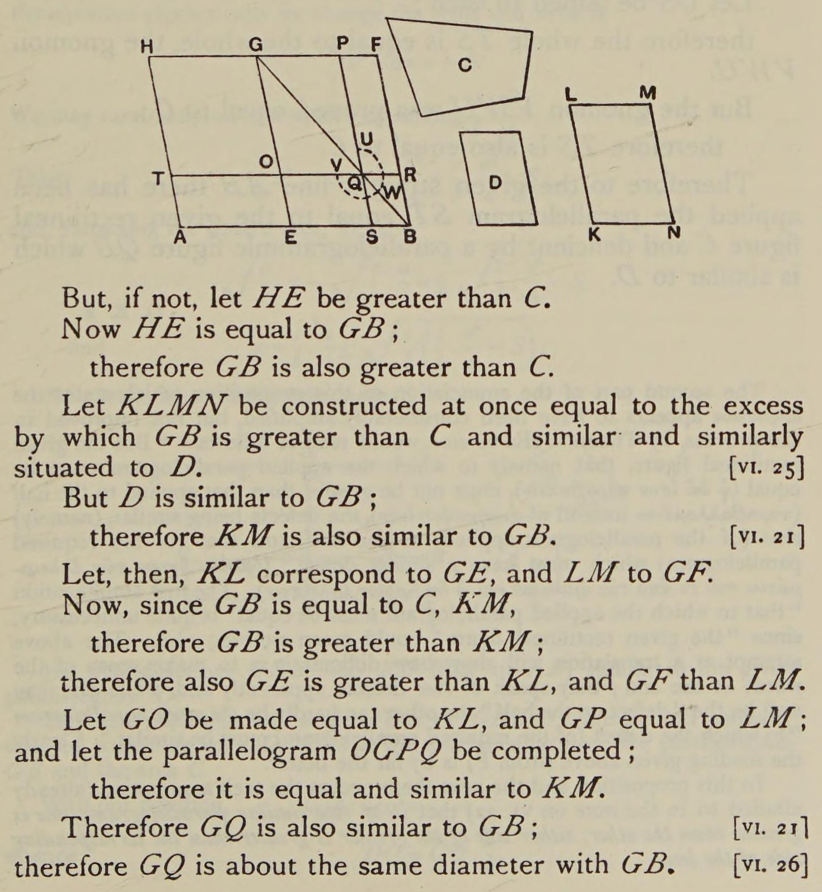
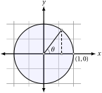

PPOL 6805 / DSAN 6750: GIS for Spatial Data Science
Fall 2025
Wednesday, September 3, 2025
Today’s Planned Schedule:
| Start | End | Topic | |
|---|---|---|---|
| Lecture | 6:30pm | 6:50pm | Logistics 1: JupyterHub x Positron → |
| 6:50pm | 7:15pm | Logistics 2: Reducing Fear → | |
| 7:20pm | 7:50pm | Building Our First Map! → | |
| Break! | 7:50pm | 8:00pm | |
| 8:00pm | 8:30pm | Raster Data → | |
| 8:30pm | 9:00pm | Finding GIS Data → |
\[ \DeclareMathOperator*{\argmax}{argmax} \DeclareMathOperator*{\argmin}{argmin} \newcommand{\bigexp}[1]{\exp\mkern-4mu\left[ #1 \right]} \newcommand{\bigexpect}[1]{\mathbb{E}\mkern-4mu \left[ #1 \right]} \newcommand{\definedas}{\overset{\small\text{def}}{=}} \newcommand{\definedalign}{\overset{\phantom{\text{defn}}}{=}} \newcommand{\eqeventual}{\overset{\text{eventually}}{=}} \newcommand{\Err}{\text{Err}} \newcommand{\expect}[1]{\mathbb{E}[#1]} \newcommand{\expectsq}[1]{\mathbb{E}^2[#1]} \newcommand{\fw}[1]{\texttt{#1}} \newcommand{\given}{\mid} \newcommand{\green}[1]{\color{green}{#1}} \newcommand{\heads}{\outcome{heads}} \newcommand{\iid}{\overset{\text{\small{iid}}}{\sim}} \newcommand{\lik}{\mathcal{L}} \newcommand{\loglik}{\ell} \DeclareMathOperator*{\maximize}{maximize} \DeclareMathOperator*{\minimize}{minimize} \newcommand{\mle}{\textsf{ML}} \newcommand{\nimplies}{\;\not\!\!\!\!\implies} \newcommand{\orange}[1]{\color{orange}{#1}} \newcommand{\outcome}[1]{\textsf{#1}} \newcommand{\param}[1]{{\color{purple} #1}} \newcommand{\pgsamplespace}{\{\green{1},\green{2},\green{3},\purp{4},\purp{5},\purp{6}\}} \newcommand{\pedge}[2]{\require{enclose}\enclose{circle}{~{#1}~} \rightarrow \; \enclose{circle}{\kern.01em {#2}~\kern.01em}} \newcommand{\pnode}[1]{\require{enclose}\enclose{circle}{\kern.1em {#1} \kern.1em}} \newcommand{\ponode}[1]{\require{enclose}\enclose{box}[background=lightgray]{{#1}}} \newcommand{\pnodesp}[1]{\require{enclose}\enclose{circle}{~{#1}~}} \newcommand{\purp}[1]{\color{purple}{#1}} \newcommand{\sign}{\text{Sign}} \newcommand{\spacecap}{\; \cap \;} \newcommand{\spacewedge}{\; \wedge \;} \newcommand{\tails}{\outcome{tails}} \newcommand{\Var}[1]{\text{Var}[#1]} \newcommand{\bigVar}[1]{\text{Var}\mkern-4mu \left[ #1 \right]} \]
Our teaching should be governed, not by a desire to make students learn things, but by the endeavor to keep burning within them that light which is called curiosity. (Montessori 1916)
| Take the time/energy you're using to worry about... | Use it instead to worry about... |
|---|---|
|
Learning GIS |
Geometers solved w/geometry (300 BC)…

…Algebraists solved w/algebra (2000 BC)…
\[ \begin{align*} &ax^2 + bx + c = 0 \\ \Rightarrow \; & x_+ = \frac{-b + \sqrt{b^2 - 4ac}}{2a} \end{align*} \]
…From 1637 onwards, whichever is easier! 🤯🤯🤯 (Isomorphism)

(Quick demo adapted from Sherry Xie’s R Consortium Workshop: Analyzing Geospatial Data in R, using DC rather than Philadelphia open data.)
Reading layer `Census_Tracts_in_2020' from data source
`/Users/jpj/gtown-local/ppol6805/w02/data/DC_Census_2020/Census_Tracts_in_2020.shp'
using driver `ESRI Shapefile'
Simple feature collection with 206 features and 315 fields
Geometry type: POLYGON
Dimension: XY
Bounding box: xmin: -8584933 ymin: 4691871 xmax: -8561515 ymax: 4721078
Projected CRS: WGS 84 / Pseudo-Mercatorsf Objectsdc_sf is an object of type sf (short for “simple feature”), which extends data.frame, and contains features which have type POLYGON
[1] "sf" "data.frame"Simple feature collection with 6 features and 12 fields
Geometry type: POLYGON
Dimension: XY
Bounding box: xmin: -8577962 ymin: 4708107 xmax: -8572564 ymax: 4716136
Projected CRS: WGS 84 / Pseudo-Mercator
OBJECTID TRACT GEOID ALAND AWATER STUSAB SUMLEV GEOCODE STATE
1 1 002002 11001002002 849376 0 DC 140 11001002002 11
2 2 002101 11001002101 600992 0 DC 140 11001002101 11
3 3 002102 11001002102 725975 0 DC 140 11001002102 11
4 4 002201 11001002201 415173 0 DC 140 11001002201 11
5 5 002202 11001002202 698895 566 DC 140 11001002202 11
6 6 000101 11001000101 199776 5261 DC 140 11001000101 11
NAME POP100 HU100 geometry
1 Census Tract 20.02 4072 1532 POLYGON ((-8575655 4714476,...
2 Census Tract 21.01 5687 2335 POLYGON ((-8574745 4715676,...
3 Census Tract 21.02 5099 2221 POLYGON ((-8573824 4715684,...
4 Census Tract 22.01 3485 1229 POLYGON ((-8574654 4714781,...
5 Census Tract 22.02 3339 1454 POLYGON ((-8573792 4714811,...
6 Census Tract 1.01 1406 999 POLYGON ((-8577962 4708867,...sf ObjectsWith some rare but important exceptions (which we’ll learn!), can be used just like a data.frame / tibble:
Classes 'sf' and 'data.frame': 206 obs. of 13 variables:
$ OBJECTID: int 1 2 3 4 5 6 7 8 9 10 ...
$ TRACT : chr "002002" "002101" "002102" "002201" ...
$ GEOID : chr "11001002002" "11001002101" "11001002102" "11001002201" ...
$ ALAND : int 849376 600992 725975 415173 698895 199776 1706484 505004 776435 1042157 ...
$ AWATER : int 0 0 0 0 566 5261 516665 0 439661 2305 ...
$ STUSAB : chr "DC" "DC" "DC" "DC" ...
$ SUMLEV : int 140 140 140 140 140 140 140 140 140 140 ...
$ GEOCODE : chr "11001002002" "11001002101" "11001002102" "11001002201" ...
$ STATE : int 11 11 11 11 11 11 11 11 11 11 ...
$ NAME : chr "Census Tract 20.02" "Census Tract 21.01" "Census Tract 21.02" "Census Tract 22.01" ...
$ POP100 : int 4072 5687 5099 3485 3339 1406 3417 4108 4672 6161 ...
$ HU100 : int 1532 2335 2221 1229 1454 999 2053 11 2169 2845 ...
$ geometry:sfc_POLYGON of length 206; first list element: List of 1
..$ : num [1:155, 1:2] -8575655 -8575655 -8575655 -8575655 -8575655 ...
..- attr(*, "class")= chr [1:3] "XY" "POLYGON" "sfg"
- attr(*, "sf_column")= chr "geometry"
- attr(*, "agr")= Factor w/ 3 levels "constant","aggregate",..: NA NA NA NA NA NA NA NA NA NA ...
..- attr(*, "names")= chr [1:12] "OBJECTID" "TRACT" "GEOID" "ALAND" ...sf ObjectsSimple feature collection with 6 features and 12 fields
Geometry type: POLYGON
Dimension: XY
Bounding box: xmin: -8577962 ymin: 4708107 xmax: -8572564 ymax: 4716136
Projected CRS: WGS 84 / Pseudo-Mercator
OBJECTID TRACT GEOID ALAND AWATER STUSAB SUMLEV GEOCODE STATE
1 1 002002 11001002002 849376 0 DC 140 11001002002 11
2 2 002101 11001002101 600992 0 DC 140 11001002101 11
3 3 002102 11001002102 725975 0 DC 140 11001002102 11
4 4 002201 11001002201 415173 0 DC 140 11001002201 11
5 5 002202 11001002202 698895 566 DC 140 11001002202 11
6 6 000101 11001000101 199776 5261 DC 140 11001000101 11
NAME POP100 HU100 geometry
1 Census Tract 20.02 4072 1532 POLYGON ((-8575655 4714476,...
2 Census Tract 21.01 5687 2335 POLYGON ((-8574745 4715676,...
3 Census Tract 21.02 5099 2221 POLYGON ((-8573824 4715684,...
4 Census Tract 22.01 3485 1229 POLYGON ((-8574654 4714781,...
5 Census Tract 22.02 3339 1454 POLYGON ((-8573792 4714811,...
6 Census Tract 1.01 1406 999 POLYGON ((-8577962 4708867,...sf Objects[1] 206 13Simple feature collection with 1 feature and 12 fields
Geometry type: POLYGON
Dimension: XY
Bounding box: xmin: -8575656 ymin: 4713958 xmax: -8574562 ymax: 4716136
Projected CRS: WGS 84 / Pseudo-Mercator
OBJECTID TRACT GEOID ALAND AWATER STUSAB SUMLEV GEOCODE STATE
1 1 002002 11001002002 849376 0 DC 140 11001002002 11
NAME POP100 HU100 geometry
1 Census Tract 20.02 4072 1532 POLYGON ((-8575655 4714476,...sf Objects[1] "Census Tract 20.02" "Census Tract 21.01" "Census Tract 21.02"
[4] "Census Tract 22.01" "Census Tract 22.02" "Census Tract 1.01" Simple feature collection with 6 features and 1 field
Geometry type: POLYGON
Dimension: XY
Bounding box: xmin: -8577962 ymin: 4708107 xmax: -8572564 ymax: 4716136
Projected CRS: WGS 84 / Pseudo-Mercator
ALAND geometry
1 849376 POLYGON ((-8575655 4714476,...
2 600992 POLYGON ((-8574745 4715676,...
3 725975 POLYGON ((-8573824 4715684,...
4 415173 POLYGON ((-8574654 4714781,...
5 698895 POLYGON ((-8573792 4714811,...
6 199776 POLYGON ((-8577962 4708867,...ggplot!POLYGONPOLYGONs may make sense for demographers, but how about someone studying air pollution in DC? (Smog, for example, does not confine itself to census tracts!)terra)Welcome to Gridtown!
Figure 4: Gridtown Values
PPOL 6805 Week 2: How Do Maps Work?